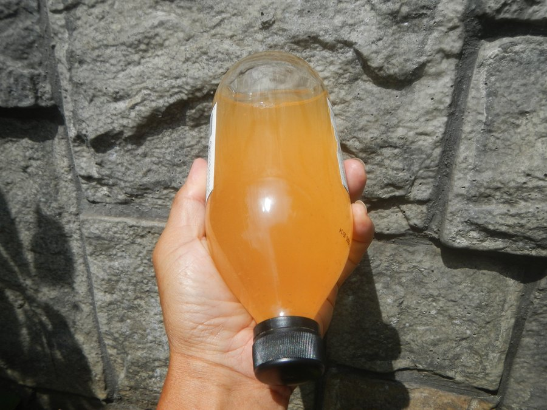

Does JellyTide Work? Appetite, Digestion and What the Research Supports
JellyTide's strongest pitch is that one gummy before a meal helps you feel full and digest better. Here's what vinegar and ketones actually do in the gut, and at what dose.

Key takeaways
- Not in any way you'd notice on the scale. JellyTide's 525 mg ACV and BHB blend is far below the amounts tested for fullness and digestion.
- Vinegar can slow stomach emptying after a starchy meal, at tablespoon-sized doses. That's where the fullness idea comes from.
- Some of vinegar's appetite effect looks like mild nausea, according to one UK study. That's not a feeling most people want.
- Ketone drinks that cut hunger used large doses. The BHB portion of one gummy appears to be tiny by comparison.
- Protein, fiber, water and sleep do far more for appetite. A pre-meal gummy can be a reminder to use them.
Does JellyTide work? For appetite and digestion, not to any meaningful degree. Vinegar slowed stomach emptying and trimmed intake in studies using about one to two tablespoons, and the ketone drinks that lowered hunger used large doses. One JellyTide gummy holds a 525 mg blend of both. Its likeliest benefit is the pre-meal routine itself.
That's a firm answer, so it deserves a full explanation. JellyTide sells itself on three ideas: fat metabolism, healthy digestion and appetite control. This page focuses on the last two, because they're the ones with at least some research behind the ingredients. For price, refunds and the full label, our JellyTide review has the details. For the fat-burning question, our page on whether Gumitide works applies word for word, since the formulas are identical.

JellyTide: check today's price
An apple cider vinegar and BHB gummy for appetite support, one a day. Sold only on the official site, with a 60-day money-back guarantee.
See the official price →What is JellyTide supposed to do?
The directions say to take one gummy a day, about 30 minutes before your morning or afternoon meal, with a full glass of water. The idea is that by the time you sit down to eat, the vinegar and BHB are already working on hunger and on how your stomach handles the meal.

What's in it is short. Each 2.5 g gummy contains a 525 mg proprietary blend of apple cider vinegar and BHB salts (calcium, magnesium and sodium beta-hydroxybutyrate), 8 calories and 2 g of sugar. The other ingredients are the usual gummy base: corn syrup, water, cane sugar, apple pectin, citric acid, sodium citrate, tapioca starch, flavors and beet root powder for color. There are no digestive enzymes, no probiotics and no fiber supplement.
So any digestion or appetite effect has to come from the vinegar, the BHB, or the routine around them. We'll take each in turn.
The timing, at least, is sensible. In the research on vinegar and meals, people took it right before or with the food, because the effect on stomach emptying only matters while there's a meal to empty. Ketone drinks in appetite studies were also taken shortly before the hunger measurements. So the label's 30-minute window lines up with how these ingredients were tested. The open question is the amount, and that's where JellyTide runs into trouble.
Can apple cider vinegar help digestion?
Vinegar does one measurable thing in the gut: it can slow how fast the stomach empties after a meal. Swedish researchers found this in the 1990s when they served bread with and without vinegar. With vinegar, the stomach emptied more slowly and blood sugar rose more gently. Later studies saw similar effects on after-meal glucose, mainly with starchy meals.
That's a real finding. It's also a narrow one. Slower stomach emptying isn't the same as "healthy digestion" in the way most people mean it, which is less bloating, less heartburn and regular bowel habits. There's no good evidence that vinegar helps with any of those. And for some people, slower emptying is the opposite of what they need. People with gastroparesis, a condition where the stomach already empties too slowly, are often told to be careful with vinegar for exactly this reason.
You'll also hear that vinegar "replaces stomach acid" to help digestion. It's a popular claim online with little research support. Your stomach makes acid far stronger than vinegar, and if you think you have too little, that's something to have checked, not something to treat with gummies.
Does vinegar curb appetite?
Sometimes, a little. A few small studies found that people ate slightly less or felt fuller after a vinegar drink. The best-known weight trial, in Japan, gave adults 15 or 30 ml of vinegar daily for 12 weeks and saw small differences in weight versus placebo.
Here's the catch that rarely makes it into ads. A UK study tested vinegar drinks with breakfast and did find lower appetite and intake. It also found the effect tracked with nausea. Participants who felt queasier ate less. The researchers suggested that part of vinegar's appetite effect may simply be mild sickness, which isn't a sustainable or pleasant way to eat less.
Mayo Clinic's take on vinegar for weight is that the evidence is limited and it shouldn't be relied on. We'd put appetite in the same bucket: small effects, mostly at doses you'd notice in your mouth and stomach.
How much vinegar does one JellyTide gummy actually deliver?
The label doesn't split the 525 mg blend, so nobody outside the company knows exactly. But you can put limits on it. Liquid vinegar is about 5% acetic acid, the active compound in these studies.
| Source | Acetic acid | Used in |
|---|---|---|
| 1 tablespoon (15 ml) liquid vinegar | About 750 mg | Weight and appetite trials, lower dose |
| 2 tablespoons (30 ml) liquid vinegar | About 1,500 mg | Weight trials, higher dose |
| About 1 tablespoon with a starchy meal | Roughly 750 mg | After-meal glucose studies (doses varied) |
| One JellyTide gummy | Unknown; well under 525 mg | No study of the product |
The whole blend weighs less than the acetic acid in one tablespoon of vinegar, and the blend also contains BHB. Vinegar powders used in gummies are mostly carrier, not acid. So the doses used in these studies are out of reach for a single gummy.
Can BHB salts reduce hunger?
This is the most interesting part of the science, and the most misused. In a 2018 study, people who drank a ketone ester (a different, more potent form than BHB salts) after an overnight fast reported less hunger, and a hunger hormone called ghrelin dropped for a few hours. The drink was large and dosed by body weight, a long way from a chewable.
Results with ketone salts have been weaker and less consistent, and they also used several grams per dose. JellyTide's label lists just 2.5 mg of sodium, 1 mg of calcium and 0.75 mg of magnesium per gummy. Since BHB salts are bound to those minerals, the BHB portion looks very small, likely tens of milligrams. That's our estimate from the label, not a published figure. Either way, it's nowhere near the doses that moved hunger in the lab.
And fat metabolism?
Briefly: BHB from a supplement is fuel your body burns, and while it's around, your body releases less of its own fat. So it doesn't promote fat burning in the way the label badge suggests. Nutritional ketosis comes from eating very few carbs, not from a gummy.
Is a gummy better or worse than liquid vinegar for your stomach?
For comfort, a gummy is easier. Straight or barely diluted vinegar can irritate the throat and stomach, and it wears down tooth enamel with regular use. There are case reports of throat injury from vinegar tablets that got stuck, which is one reason to take any vinegar product with plenty of water. A soft gummy with a full glass avoids most of that.
For effect, the liquid wins easily, because you can actually reach the amounts used in studies. One tablespoon in a large glass of water with a meal costs pennies and matches the lower trial dose. If you want to test whether vinegar does anything for your appetite, that's the more faithful experiment, provided your doctor is fine with it.
The gummy's real advantage is that people stick with it. Plenty of people try liquid vinegar for a week and quit over the taste. A routine you keep at a low dose may matter more to you than a routine you abandon at a higher one. Just be clear about which trade you're making.
Is there any study on JellyTide itself?
We couldn't find one. No published trial tests the JellyTide gummy, at its dose, for appetite, digestion or weight. Everything on this page is about ingredients studied elsewhere, often in different forms and at much higher amounts. Ingredient research can tell you an idea is plausible. It can't tell you a particular bottle delivers it.
The same goes for Gumitide, which has the same label. Our Gumitide vs JellyTide comparison lays the two panels side by side.
What actually controls appetite and digestion?
If you came here because hunger is the hard part of losing weight, you're in good company. These are the approaches with the most reliable evidence, and none of them depend on a gummy.
| Habit | How it helps | Evidence |
|---|---|---|
| Protein at every meal | Raises fullness hormones and keeps you satisfied longer | Strong and consistent |
| Fiber-rich foods (oats, beans, vegetables, fruit) | Adds bulk, slows digestion, feeds gut bacteria | Strong |
| Water or soup before a meal | Takes up stomach space; modest drop in intake | Moderate |
| Eating slowly, without screens | Gives fullness signals time to arrive | Moderate |
| Seven or more hours of sleep | Short sleep raises hunger and cravings the next day | Strong |
| Prescription GLP-1 medication, if appropriate | Slows stomach emptying and reduces appetite substantially | Strong, under medical care |
Look at the third row. A glass of water before a meal is part of JellyTide's own directions, and it has more evidence for reducing intake than anything in the gummy. That's the fairest way to see the product: as a reminder to do something that already helps.
For digestion, the same basics apply. Fiber, fluids, regular meals and movement do most of the work. Fermented foods such as yogurt and kefir are worth a look if you want to support your gut bacteria. Our guide to the gut-brain connection covers how diet shapes the gut, and the energy and metabolism hub collects our articles on weight and eating habits.
When should digestion or appetite changes send you to a doctor?
Supplements are a poor fit for symptoms that are new, lasting or getting worse. See a doctor rather than trying JellyTide or any gummy if you have:
- Unexplained weight loss or a sudden loss of appetite.
- Heartburn or reflux most days, or trouble swallowing.
- Bloating, pain or bowel changes lasting more than a few weeks, or blood in your stool.
- Constant hunger or thirst, which can be a sign of high blood sugar.
- Feeling full after a few bites, or vomiting undigested food hours after eating.
Also check with your doctor before starting JellyTide if you take diabetes medication, diuretics or heart medications, or if you have gastroparesis. The label itself asks anyone taking medication or under a physician's care to consult a professional first.
So, does JellyTide work for appetite and digestion?
Not through its ingredients, at least not at this dose. The vinegar studies that showed slower stomach emptying and slightly lower intake used far more than one gummy contains. The ketone research on hunger used large drinks. And the digestion claim has almost nothing behind it beyond a slower-emptying effect that isn't always welcome.
What JellyTide can offer is structure. A gummy plus a full glass of water half an hour before your biggest meal is a small, low-calorie ritual. Some people find that pause helps them eat more slowly and stop sooner. If that's what you're after, the 60-day guarantee on official orders gives you time to see whether it helps. If you want a noticeable change in hunger, start with protein, fiber and sleep, and talk to your doctor about whether medical options make sense for you.
Who's the best fit? Someone who struggles with grazing before meals, likes having a small ritual, and won't mind if the scale doesn't move from the gummy alone. Who should pass? Anyone with gastroparesis, anyone on glucose-lowering drugs who hasn't spoken to their doctor, and anyone who already owns Gumitide, which is the same product under another name.
JellyTide: check today's price
An apple cider vinegar and BHB gummy for appetite support, one a day. Sold only on the official site, with a 60-day money-back guarantee.
See the official price →Frequently asked questions
When is the best time to take JellyTide?
The label says about 30 minutes before your morning or afternoon meal, with a full glass of water. If appetite is your main concern, use it before the meal where you usually overeat.
Can JellyTide cause stomach upset?
It's a small, low-dose gummy, so most people won't notice anything. Some may feel mild discomfort from anything acidic on an empty stomach. Taking it with the recommended glass of water helps.
Does JellyTide help with constipation?
There's no evidence it does. The gummy contains no meaningful fiber, no probiotics and no laxative ingredients. Fiber, fluids and activity are the usual first steps, and lasting constipation is worth a doctor's visit.
Is JellyTide safe with a GLP-1 drug like semaglutide?
There's no known direct interaction, but both relate to appetite and digestion, and GLP-1 drugs already slow stomach emptying. Ask your prescriber before adding any supplement.
Will JellyTide stop sugar cravings?
Nothing on the label is shown to reduce cravings at this dose, and each gummy itself contains 2 g of sugar. Regular meals with protein, and enough sleep, are better tools for cravings.
How long should I try JellyTide before deciding?
Four to six weeks is enough to judge a habit like hunger before meals. That also leaves time to request a refund inside the 60-day guarantee if you bought through the official checkout.
Want to try a pre-meal routine with JellyTide?
One gummy and a glass of water before your meal, 8 calories, with a 60-day money-back guarantee on official orders. See the current price on the official page.
See JellyTide's official price →Related: JellyTide review · Does Gumitide work? · The gut-brain connection · GLP-1 drugs and brain fog